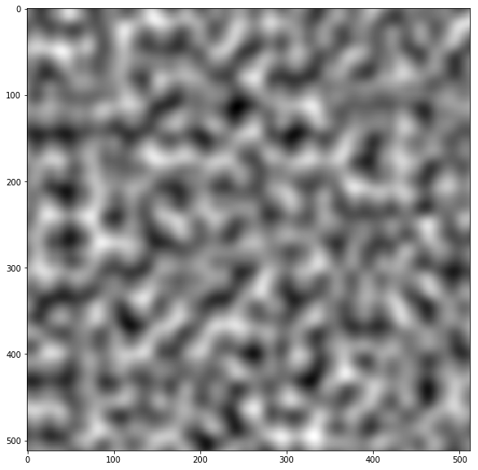
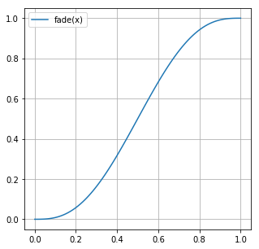
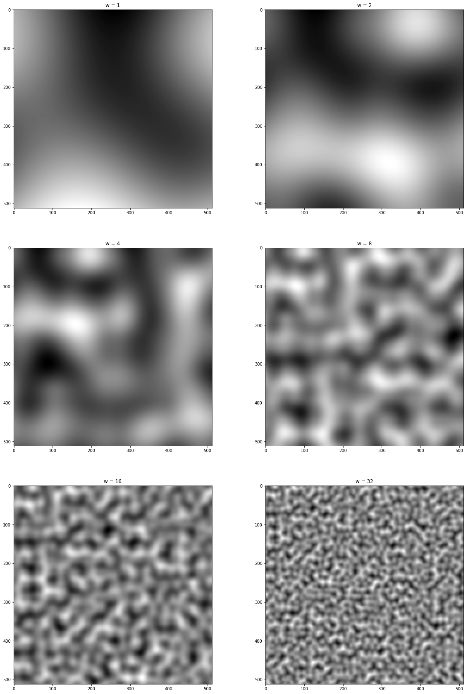

パーリンノイズ
書いたので。
# モジュールのインポート
%matplotlib inline
from math import floor
from itertools import product
import numpy as np
import matplotlib.pyplot as plt
シンプルなノイズ
格子点ごとにランダムに値を割り振って、一般の座標における値を線形補間で求めるノイズを考える。
パーリンノイズのコードが多少複雑になるので、このノイズのコードもクラスを使って書く。 なおランダムな値を格子点に割り振るときには この記事 で紹介したハッシュ法を使った。
def lerp(a, b, t):
return a + (b - a) * t
class Simple():
weights = np.random.random(256)
rand_index = np.zeros(512, dtype=np.int8)
for i, rand in enumerate(np.random.permutation(256)):
rand_index[i] = rand
rand_index[i + 256] = rand
@staticmethod
def hash(i, j):
return Simple.rand_index[Simple.rand_index[i] + j]
# 点の周りの格子点の線形補間を求める
@staticmethod
def noise(x, y):
ix = floor(x) % 256
iy = floor(y) % 256
dx = x - floor(x)
dy = y - floor(y)
y0 = lerp(Simple.weights[Simple.hash(ix, iy)],
Simple.weights[Simple.hash(ix + 1, iy)], dx)
y1 = lerp(Simple.weights[Simple.hash(ix, iy + 1)],
Simple.weights[Simple.hash(ix + 1, iy + 1)], dx)
return lerp(y0, y1, dy)
# 画像の大きさは(512, 512)
width, height = 512, 512
canvas = np.zeros((width, height))
# 格子点を16個配置する
w = 16
canvas = np.array([[Simple.noise(x, y)
for x in np.linspace(0, w, width)]
for y in np.linspace(0, w, height)])
# matplotlibを使って表示
fig, ax = plt.subplots(figsize=(10, 10))
ax.imshow(canvas, cmap=plt.cm.binary)

この場合、元になった格子が目立ってノイズっぽくならない。
パーリンノイズ
パーリンノイズを使うと自然なノイズを高速に作れる。
パーリンノイズの工夫を挙げると
- 格子点に割り振るのは重みではなく勾配ベクトル \(\vec{a}_{ij}\)
- 格子点の重みは固定ではなく、計算している座標 \((x, y)\) から求める
- \(noise(x, y)\) 計算するとき、格子点 \(i, j\) の重みは \((i-x, j-x) \cdot \vec{a}_{ij}\)
- 格子の端で値が急に変化するのを避けるために、\((x, y)\)の小数部分を
fade関数にかけてから線形補間をする
がある。勾配ベクトルとの内積使って重みを求めることで格子点の周りでも値が散らばるようになり、ノイズが自然になる。
class Perlin():
slopes = 2 * np.random.random((256, 2)) - 1
rand_index = np.zeros(512, dtype=np.int8)
for i, rand in enumerate(np.random.permutation(256)):
rand_index[i] = rand
rand_index[i + 256] = rand
@staticmethod
def hash(i, j):
# 前提条件: 0 <= i, j <= 256
return Perlin.rand_index[Perlin.rand_index[i] + j]
@staticmethod
def fade(x):
return 6 * x**5 - 15 * x ** 4 + 10 * x**3
@staticmethod
def weight(ix, iy, dx, dy):
# 格子点(ix, iy)に対する(ix + dx, iy + dy)の重みを求める
ix %= 256
iy %= 256
ax, ay = Perlin.slopes[Perlin.hash(ix, iy)]
return ax * dx + ay * dy
@staticmethod
def noise(x, y):
ix = floor(x)
iy = floor(y)
dx = x - floor(x)
dy = y - floor(y)
# 重みを求める
w00 = Perlin.weight(ix, iy, dx , dy)
w10 = Perlin.weight(ix+1, iy, dx-1, dy)
w01 = Perlin.weight(ix, iy+1, dx, dy-1)
w11 = Perlin.weight(ix+1, iy+1, dx-1, dy-1)
# 小数部分を変換する
wx = Perlin.fade(dx)
wy = Perlin.fade(dy)
# 線形補間して返す
y0 = lerp(w00, w10, wx)
y1 = lerp(w01, w11, wx)
return (lerp(y0, y1, wy) - 1) / 2 # 値域を[0, 1]に戻す
# 画像の大きさは512x512
width, height = 512, 512
canvas = np.zeros((width, height))
# 格子点を16個配置する
w = 16
canvas = np.array([[Perlin.noise(x, y)
for x in np.linspace(0, w, width)]
for y in np.linspace(0, w, height)])
# matplotlibを使って表示
fig, ax = plt.subplots(figsize=(10, 10))
ax.imshow(canvas, cmap=plt.cm.binary)

計算に用いた格子がどこにあるのか分からなくなって、ノイズらしいノイズになる。
fade 関数もプロットしておく。
fig, ax = plt.subplots(figsize=(5, 5))
ax.plot(np.linspace(0, 1, 100), fade(np.linspace(0, 1, 100)), label="fade(x)")
ax.grid()
ax.legend()
fig

この関数は \(x = 0, 1\) で一階、二階の微分係数が0になる。 そのため、値を隣の格子と滑らかにつなげることができる。
画像を作るときの w の値を変化させればノイズの粗さを変えることができる。
fig, axes = plt.subplots(nrows=3, ncols=2, figsize=(20, 30))
width, height = 512, 512
canvas = np.zeros((width, height))
for i, j in product([0, 1, 2], [0, 1]):
# wの値を2のべきにする
w = 2**(i*2 + j)
canvas = np.array([[Perlin.noise(x, y)
for x in np.linspace(0, w, width)]
for y in np.linspace(0, w, height)])
axes[i, j].set_title("w = " + str(w))
axes[i, j].imshow(canvas, cmap=plt.cm.binary)
fig

w の値にかかわらずそれらしいノイズが生成されている。
Ken Perlinの元論文を読むと勾配ベクトルを整数のみにして高速化する方法や パーリンノイズを元にして別のノイズを作る方法も乗っているがこれはまた今度にする。
参考文献
Physically Based Rendering, Third Edition, 10.6.1 "Perlin Noise" http://ai2-s2-pdfs.s3.amazonaws.com/e04d/7772b91a83a901408eb0876bbb7814b1d4b5.pdf http://mrl.nyu.edu/~perlin/noise/